Guide · updated 11 October 2026
Sussex wedding venues licensed for ceremonies
If you want the ceremony and the party in one place, the venue needs a licence for civil ceremonies. These Sussex venues say they have one.

Licensed for civil ceremonies
- Bignor ParkLicensed for civil ceremonies and partnerships: outdoors at the Greek Loggia (up to 150) or indoors in the Coach Store (up to 60)
- Kingscote EstateLicensed for civil ceremonies in the Tithe Barn
- Michelham PrioryLicensed for civil ceremonies indoors (Great Barn and Priory Chamber) and outdoors in the gardens
- Devil's Dyke FarmFully licensed for legal ceremonies
- Plumpton RacecourseLicensed for civil ceremonies and civil partnerships, indoors or outdoors in the Paddock
- Firle PlaceCivil ceremonies inside or outside the house; Anglican ceremonies at neighbouring St Peter's Church by arrangement
- Pelham HouseLicensed for civil ceremonies in the Panelled and Terrace rooms
- East Sussex NationalLicensed for ceremonies and civil partnerships: outdoors in the Birdcage on the south lawns, or indoors in the National Suite and Lynx Roundall
- Fitzleroi BarnLicensed for civil ceremonies indoors and outdoors; celebrant-led and humanist ceremonies welcome
- Southlands BarnFully licensed for civil ceremonies indoors (the Sussex Barn) and outdoors (the Pergola)
- Selden BarnsTwo licensed outdoor ceremony areas, plus a restored ceremony room for up to 100
Ceremony spaces, licence not stated
These venues host ceremonies but don't spell out a civil licence on their websites. Ask before you book.
- Herstmonceux CastleCeremony rooms for 30 to 180 guests; the licence is not stated on the weddings page
- Wadhurst CastleCeremonies in the Drawing Room (90 seated), the Winter Garden (42) or the walled garden pavilion in summer (up to 150); the licence is not stated on the page
- Buxted ParkCeremonies for up to 120 guests; the licence is not stated on the weddings page
- Southend BarnsThe Dairy Barn is described as a "fully licensed barn"; a civil ceremony licence is not spelled out.
If your favourite venue isn't licensed
You can hold the legal ceremony at a register office or another licensed venue, then a celebration ceremony with a celebrant at the venue of your choice. Many couples do the legal part with two witnesses on a weekday.
Questions couples ask
Which Sussex venues have outdoor ceremony licences?
Bignor Park, Michelham Priory, Plumpton Racecourse, Firle Place, East Sussex National, Fitzleroi Barn, Southlands Barn and Selden Barns offer outdoor ceremonies with a licence.
Who conducts the ceremony at a licensed venue?
Registrars from the county council attend licensed venues in Sussex. Book them as soon as you have a date.